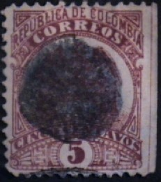
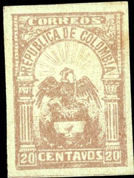
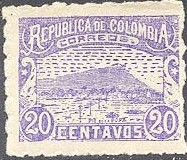
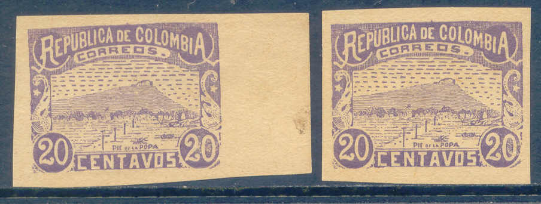

Return To Catalogue - Colombia overview
Note: on my website many of the
pictures can not be seen! They are of course present in the
catalogue;
contact me if you want to purchase it.
1 c green on green 1 c red on yellow (1892) 2 c red on red (eagle in an ellipse) 2 c red on red (eagle in a circle, 1892) 2 c green (eagle in a circle, 1892) 5 c blue on blue 5 c black on yellow (1892) 5 c brown (1895) 10 c brown on yellow 10 c brown on red (1892) 20 c violet 20 c brown (1892) 1 P blue on green
Usually these stamps are perforated, though imperforate stamps also exist.
Value of the stamps |
|||
vc = very common c = common * = not so common ** = uncommon |
*** = very uncommon R = rare RR = very rare RRR = extremely rare |
||
| Value | Unused | Used | Remarks |
| 1 c green on green | * | * | |
| 1 c red on yellow | c | c | |
| 2 c red on red | * | * | Eagle in ellipse |
| 2 c red on red | ** | ** | Eagle in circle |
| 2 c green | c | c | |
| 5 c blue on blue | c | c | |
| 5 c black on yellow | c | vc | |
| 5 c brown | c | c | Exists on yellow or lilac paper |
| 10 c brown on yellow | c | * | |
| 10 c brown on red | * | c | |
| 20 c violet | ** | * | |
| 20 c brown | c | c | On blue, green or white (R) paper |
| 1 P | ** | * | |
An imperforate 1 c stamp.
The 2 c green exists with overprint 'Habilitada Vale $0,01 Honda', this is a local issue for Honda (see there):

Honda issue

(Reduced sizes)
1 c red on yellow 5 c red on red 10 c brown on red 50 c blue on lilac
Value of the stamps |
|||
vc = very common c = common * = not so common ** = uncommon |
*** = very uncommon R = rare RR = very rare RRR = extremely rare |
||
| Value | Unused | Used | Remarks |
| 1 c | c | c | |
| 5 c | c | c | |
| 10 c | ** | * | |
| 50 c | * | * | |
A similar stamp with value inscription 'CINCO 5 CTS' at the bottom was issued for Carthagena (see there).

Fancy cancel resembling three 'S' on 10 c
(reduced size)
5 c brown 10 c black 20 c red (other design)
Value of the stamps |
|||
vc = very common c = common * = not so common ** = uncommon |
*** = very uncommon R = rare RR = very rare RRR = extremely rare |
||
| Value | Unused | Used | Remarks |
| 1 c | ** | ** | |
| 5 c | ** | * | |
| 20 c | * | * | |
In 1902-04 several stamps of Colombia, Bolivar and Carthagena were overprinted 'R CARTAGENA' to serve as registration stamps for Carthagena. Example:

Stamp of the above set overprinted with 'R CARTAGENA'
1/2 c brown (1904) 1 c green (1904) 2 c black on lilac 2 c blue (1904) 4 c red on green 4 c blue on green 5 c green on green 5 c blue on blue 5 c red (1904) 10 c black on lilac 10 c violet (1904) 20 c brown on yellow 20 c blue on yellow 50 c blue on lilac 1 P violet on brown 1 P brown (1905) 5 P green on blue 10 P green on green 50 P yellow 100 P blue on lilac
Value of the stamps |
|||
vc = very common c = common * = not so common ** = uncommon |
*** = very uncommon R = rare RR = very rare RRR = extremely rare |
||
| Value | Unused | Used | Remarks |
| 1/2 c | ** | ** | |
| 1 c | ** | * | |
| 2 c black on lilac | c | c | |
| 2 c blue | * | * | |
| 4 c red on green | c | c | |
| 4 c blue on green | c | c | |
| 5 c green on green | c | c | |
| 5 c blue on blue | * | * | |
| 5 c red | ** | * | |
| 10 c black on lilac | c | c | |
| 10 c violet | ** | * | |
| 20 c brown on yellow | * | c | |
| 20 c blue on yellow | * | c | |
| 50 c | * | * | Also issued in shade green on lilac |
| 1 P violet on brown | * | * | |
| 1 P brown | *** | ** | Different design |
| 5 P | *** | *** | |
| 10 P | *** | *** | |
| 50 P | R | R | |
| 100 P | R | R | |
Even though the 5 c and 20 c values are quite common, philatelic forgeries exist. They are fully described in the book 'Focus on Forgeries' by V.E. Tyler. In the 5 c forgery the word 'DE' is different and in the 20 c the '0' of the right bottom '20' is too round (it should be squarish in the genuine stamps). According to this book these forgeries were made by Louis Dumonteuil d'Olivera of Paris.

Two forgeries of the 5 c and 20 c value.



2 c blue 2 c green 2 c red 5 c blue 5 c yellow 10 c red 10 c orange 10 c blue 20 c blue 20 c violet 20 c red 50 c brown 50 c orange 50 c red 50 c green 1 P blue 1 P violet 1 P brown 1 P red 5 P red 5 P brown 5 P green 10 P green 10 P red
Value of the stamps |
|||
vc = very common c = common * = not so common ** = uncommon |
*** = very uncommon R = rare RR = very rare RRR = extremely rare |
||
| Value | Unused | Used | Remarks |
| 2 c blue | * | * | |
| 2 c green | * | * | |
| 2 c red | *** | *** | |
| 5 c blue | * | * | |
| 5 c yellow | * | ** | |
| 10 c red | * | * | |
| 10 c orange | * | * | |
| 10 c blue | * | * | Also printed on coloured paper |
| 20 c blue | *** | *** | |
| 20 c violet | R | R | |
| 20 c red | *** | *** | |
| 50 c brown | * | * | Also yellow |
| 50 c orange | *** | *** | |
| 50 c red | *** | *** | |
| 50 c green | ** | ** | |
| 1 P blue | ** | ** | |
| 1 P violet | R | R | |
| 1 P brown | * | * | |
| 1 P red | * | * | |
| 5 P red | ** | ** | |
| 5 P brown | ** | * | |
| 5 P green | ** | ** | |
| 10 P green | ** | ** | |
| 10 P red | ** | ** | |

I've been told that these two 20 c stamps are forgeries, I have
no further information
Forgery of the 5 P value. The first 'O' of 'CORREOS' is badly
done and the 'P' of 'PESOS' does not touch the circle with the
'5' as in the genuine stamps. The word 'VALIENTE' at the bottom
of the stamp can not be read in the forgeries. I've also seen
this forgery with cancel.


{kind=link}
{kind=link}
{kind=link}
{kind=link}